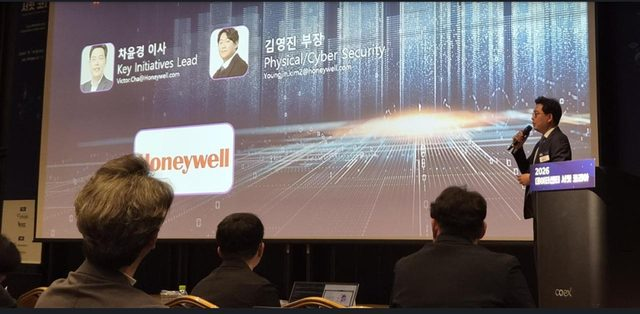
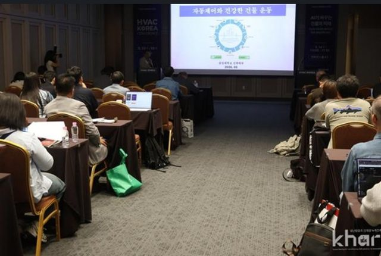
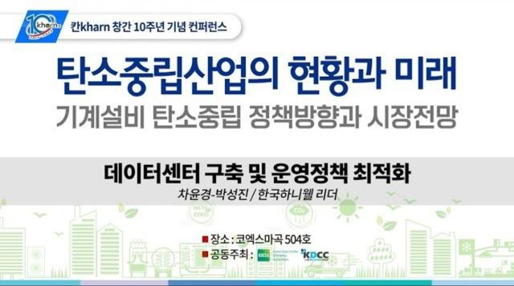
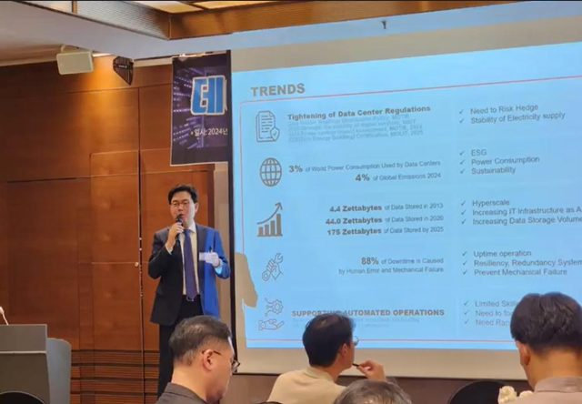
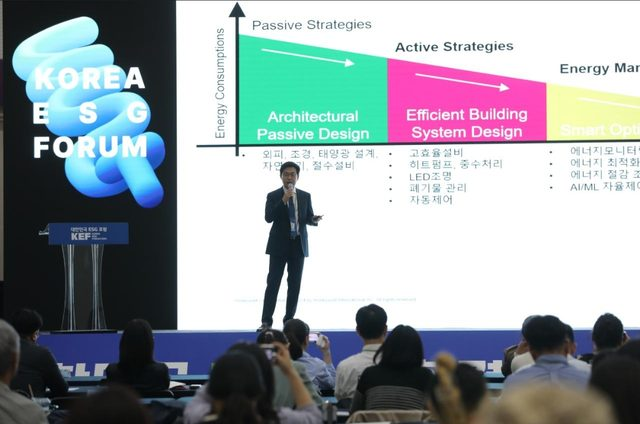
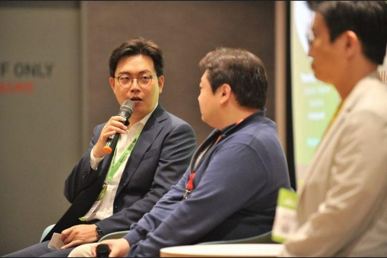

Executive Profile
빌딩 자동제어에서 시작해 25년을 현장에서 보냈습니다. 자율화가 가까워질수록 질문이 하나 남았습니다 — 기계가 다 하게 되면, 사람의 자리는 어디인가. 그 답을 증명하려고 다시 학생이 됐습니다. 현장에서 경험하고, 연구로 검증합니다.
25년 이상 ICT 및 빌딩 자동제어 산업에서 비즈니스 성장과 Digital/AX Transformation을 기획하고 타 부서와의 협업을 리드해 왔습니다. 미션 크리티컬 인프라와 빌딩관리 시스템을 AI 기반 자율운영 체계로 전환하는 전략을 실행하고 있습니다.
Strategic Focus
- Mission Critical / Data Center & Industrial: 하이퍼스케일·산업/제조 인프라
- Cloud/AI-based IBMS & Digital Transformation: Cloud/AI 통합 전환(Forge)
- Energy & Sustainability: 에너지 최적화 제어 및 ESG/Energy ROI 모델
- Cross-functional Program Orchestration: AI-Native 조직 전환
Thought Leadership
MBA 학위논문
- Digital Transformation Study of Building Automation Industry — Cloud 플랫폼, AI 운영 최적화, Servitization (서강대 MBA, 2026, 우수졸업 97/100)
논문 및 기고
- Energy optimization control and integrated operation in the smart building (SAREK, 2016)
- Smart Green Building Technology (Korea Green Building Council, 2014)
- Building energy solutions via BAS and IT convergence (SAREK, 2011)
- Efficient Energy Management for Zero Energy Building
- Advanced Optimization Control
- Automation Control Facility Management (자동제어 설비관리)
Talks & Media






자격 및 인증
- CDCS (Certified Data Centre Specialist), 2026
- CDCP (Certified Data Centre Professional), 2023
- Certified Enterprise Disaster Manager (기업재난관리사), 2018
- ISO 50001 Internal Auditor (에너지경영시스템 심사원), 2013
핵심 프로페셔널 링크
전문 지식 아카이브 & 블로그
자율화, AI 및 비즈니스 혁신 아티클
브런치 스토리
출판을 향한 글쓰기 여정
LinkedIn
차윤경 이사 글로벌 프로필 네트워크
이메일 문의하기
비즈니스 제안 및 프로페셔널 협업
Obsidian · Quartz 기반 디지털 가든에서 발행됩니다.
2026-07-12 업데이트